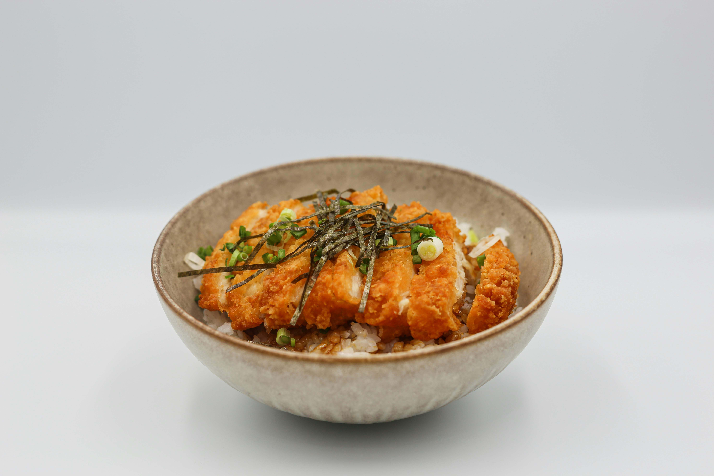

Katsu Curry (カツカレー) Recipe
Home
Photo by Xavier Chng on
Unsplash

The katsu curry shown here may differ slightly from the version in the recipe below.
Katsu Curry (Japanese Curry with Chicken Cutlet)
Katsu Curry (カツカレー) is a Japanese curry dish served with a breaded chicken cutlet on top.
It's typically made with a curry roux block, a common pantry item in Japan,
which is easy to find at Asian grocery stores or larger supermarkets.
Ingredients (tbsp = 15ml, cup = 250ml)
Curry
- 400g (0.9 lb) onion sliced into 1 cm (3/8”) wide pieces
- 250g (0.6 lb) potato cut into 1.5 cm (5/8”) cubes
- 100g (3.5 oz) carrot sliced into 7 mm (1/4”) thick pieces
- 1 tbsp cooking oil
- 1/2 packet of 230g (0.5lb) House Vermont Curry
- 800ml (1.7pt) water
- 4 cups (720 g) cooked rice (hot)
- 4 Chicken Cutlets cut into 2.5 cm (1”) wide strips
Condiment (optional)
Instructions
- Heat oil in a pot over medium-high heat.
- Add onions and cook until softened.
- Add potatoes and carrots, stir briefly.
- Pour in water, bring to a boil, then lower heat and simmer for about 7 minutes, until vegetables are mostly cooked.
- Break curry roux into pieces and add to the pot. Stir until dissolved.
- Cover with a lid and cook on low heat for about 10 minutes, stirring occasionally to prevent sticking.
- Check the thickness of the sauce. Add water if too thick, or simmer longer uncovered if too thin.
- Remove from heat.